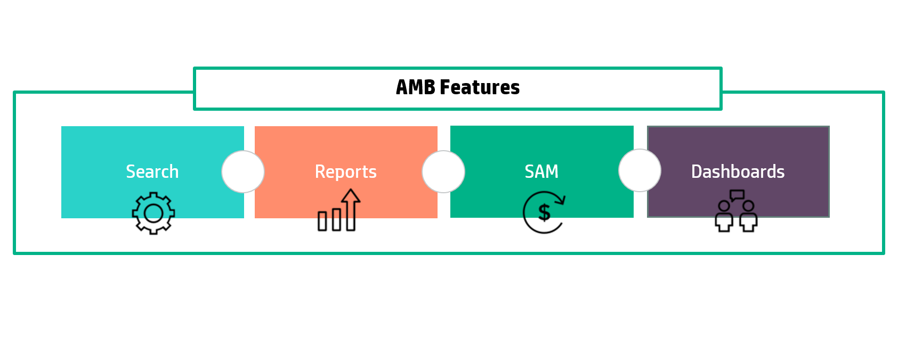

Asset Manager Browser
AM Browser helps the world’s largest organizations to unleash the power of their most valuable ITAM data. People across your organization start to see things in the business they couldn't see before. They get answers to questions they previously wouldn't have thought to ask. Value of self-service is redefined by the new AM browser product.

Features
AM Browser provides you with the following features:
- Providing quick access to my IT assets information
- Create views in mins and expose the view as both list and topology modes
- Export PDF reports with customized formats and styles (support barcode)
- Allow query data by AQL (AM query language) and flexible customize graphical formats
- Manage divers personal dashboard composited by graphical
- A simple SAM (Software Asset Management) reports module
- Monitor AM-UCMDB integration status

Use cases
AM Browser provides you with the following use cases:
- Audit : Get Effective license positioning for major SAM vendors with SAM Dashboard
- On demand self-service reporting : Self-service reporting for any users in an organization. For ex, a datacentre manager trying to search for a location of an asset via asset tag; Asset receiving team validating the asset ownership of an end user asset via AMB.
- Topology visualization : Change control manager wanted to check list of VMs connected to a ESX server.
Roles
AM Browser has 3 roles: Administrator, Power user and Normal user
Administrator
- Manage Views, Graphs and PDF Templates
- Customize My Assets module
- Share view or graph links by mail
- Publish Insight tabs to Power users
- Manage server configuration (backend)
- Customize icons for each record in Viewer topology mode (backend)
Power user
- Global search
- Query View, Graphs and export data by CSV or PDF
- Manage personal dashboard (Insight) and view published tabs by Administrator
- Monitor AM-UCMDB adapters
Normal user
- Explorer a shared View
- Explorer a shard Graph
- Export CSV and PDF
- Explorer My Assets
Change logs
-
1.1
- UI and style adjustment
- Insight as home page, move global search in header
- New modules: SAM and My Assets (in user menu, default module for normal user)
- A new topology display mode to display records in Viewer (support customize icon)
- Records in Viewer can be exported by PDF (report and barcode), support customization
- Allow to configure condition drill down Graph to View by selection
-
1.0 Update 1
- Customized settings of Viewer can be saved in web browser.
- A confirmation box appears when you try to leave the page with unsaved data (Insight/Builder/Graph).
- In Global Record Search and Viewer, when a query is being executed, other buttons and links are greyed out to avoid repetitive clicks.
- UCMDB Adapter is optimized.
- A stability issue of REST API is fixed.
- Some usability issues are fixed.
-
1.0
- Release